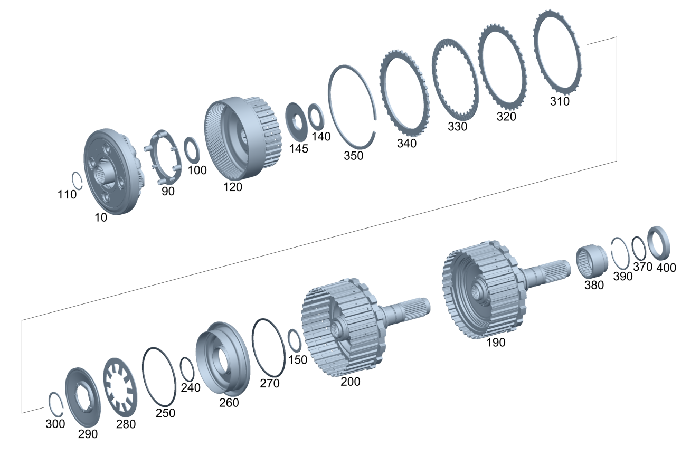

| № | Артикул | Название | Кол. | Примечание | Ограничение |
|---|---|---|---|---|---|
| 10 | A 725 270 08 43 | - Водило планет. передачи (PLANETENRADTRAEGER) | 1 | 4A6/4A7 | |
| 10 | A 725 270 42 05 | - Водило планет. передачи (PLANETENRADTRAEGER) | 1 | 4A6/4A7 | |
| 10 | A 725 270 42 05 | - Водило планет. передачи (PLANETENRADTRAEGER) | 1 | 4A0/4A1/4A2/4A6/4A7 | |
| 10 | A 725 270 42 05 | - Водило планет. передачи (PLANETENRADTRAEGER) | 1 | 4A0/4A1/4A2/4A6/4A7/3A0/3A1/3A2/3A3/3A4/3A5/3A6/3A7/3A8/3A9 | |
| 10 | A 725 270 42 05 | - Водило планет. передачи (PLANETENRADTRAEGER) | 1 | ||
| 10 | A 725 270 42 13 | - Водило планет. передачи (PLANETENRADTRAEGER) | 1 | ||
| 10 | A 725 270 41 05 | - Водило планет. передачи (PLANETENRADTRAEGER) | 1 | A300/A310/A305/A315/A306/A307/A308 | |
| 90 | A 725 272 00 30 | - Маслосливной желоб (OELFANGRINNE) | 1 | 4A6/4A7 | |
| 90 | A 725 272 00 30 | - Маслосливной желоб (OELFANGRINNE) | 1 | 4A0/4A1/4A2/4A6/4A7 | |
| 90 | A 725 272 00 30 | - Маслосливной желоб (OELFANGRINNE) | 1 | 4A0/4A1/4A2/4A6/4A7/3A0/3A1/3A2/3A3/3A4/3A5/3A6/3A7/3A8/3A9 | |
| 90 | A 725 272 91 05 | - Маслоуловитель (OELFAENGER) | 1 | ||
| 90 | A 725 272 91 05 | - Маслоуловитель (OELFAENGER) | 1 | ||
| 90 | A 725 272 78 00 | - Маслосливной желоб (OELFANGRINNE) | 1 | A300/A310/A305/A315/A306/A307/A308 | |
| 100 | A 725 981 16 10 | - Осевой игольчатый ролик (AXIALNADELKRANZ) | 1 | ||
| 110 | A 009 990 38 82 | - Регулировочный диск (EINSTELLSCHEIBE) | 1 | 1.00 MM | |
| 110 | A 014 990 13 82 | - Компенсационная шайба (AUSGLEICHSSCHEIBE) | 1 | 2,1MM | |
| 110 | A 009 990 39 82 | - Регулировочный диск (EINSTELLSCHEIBE) | 1 | 1.20 MM | |
| 110 | A 014 990 14 82 | - Компенсационная шайба (AUSGLEICHSSCHEIBE) | 1 | 2,3MM | |
| 110 | A 009 990 40 82 | - Регулировочный диск (EINSTELLSCHEIBE) | 1 | 1.40 MM | |
| 110 | A 014 990 15 82 | - Компенсационная шайба (AUSGLEICHSSCHEIBE) | 1 | 2,5MM | |
| 110 | A 009 990 41 82 | - Регулировочный диск (EINSTELLSCHEIBE) | 1 | 1.60 MM | |
| 110 | A 014 990 16 82 | - Компенсационная шайба (AUSGLEICHSSCHEIBE) | 1 | 2,7MM | |
| 110 | A 009 990 42 82 | - Регулировочный диск (EINSTELLSCHEIBE) | 1 | 1.80 | |
| 110 | A 014 990 17 82 | - Компенсационная шайба (AUSGLEICHSSCHEIBE) | 1 | 2,9MM | |
| 110 | A 009 990 43 82 | - Регулировочный диск (EINSTELLSCHEIBE) | 1 | 2.00 MM | |
| 110 | A 009 990 44 82 | - Регулировочный диск (EINSTELLSCHEIBE) | 1 | 2.20 MM | |
| 110 | A 009 990 45 82 | - Регулировочный диск (EINSTELLSCHEIBE) | 1 | 2.40 MM | |
| 110 | A 009 990 46 82 | - Регулировочный диск (EINSTELLSCHEIBE) | 1 | 2.60 MM | |
| 110 | A 009 990 47 82 | - Регулировочный диск (EINSTELLSCHEIBE) | 1 | 2.80 MM | |
| 110 | A 009 990 48 82 | - Регулировочный диск (EINSTELLSCHEIBE) | 1 | 3.00 MM | |
| 120 | A 725 270 40 05 | - Коронная шестерня (HOHLRAD) | 1 | ||
| 120 | A 725 270 90 03 | - Коронная шестерня (HOHLRAD) | 1 | ||
| 140 | A 725 981 26 10 | - Осевой игольчатый ролик (AXIALNADELKRANZ) | 1 | G041/G043 | |
| 140 | A 725 981 17 10 | - Осевой игольчатый ролик (AXIALNADELKRANZ) | 1 | -(G041/G043) | |
| 140 | A 725 981 26 10 | - Осевой игольчатый ролик (AXIALNADELKRANZ) | 1 | ||
| 145 | A 725 272 08 02 | - Упорная шайба (ANLAUFSCHEIBE) | 1 | ||
| 145 | A 725 272 12 07 | - Упорная шайба (ANLAUFSCHEIBE) | 1 | ||
| 150 | A 010 990 89 82 | - Регулировочный диск (EINSTELLSCHEIBE) | 1 | 1,4 MM [402] БОЛЬШЕ НЕ ПОСТАВЛЯЕТСЯ | -(G041/G043) |
| 150 | A 010 990 90 82 | - Регулировочный диск (EINSTELLSCHEIBE) | 1 | 1,5 MM [402] БОЛЬШЕ НЕ ПОСТАВЛЯЕТСЯ | -(G041/G043) |
| 150 | A 013 990 56 82 | - Компенсационная шайба (AUSGLEICHSSCHEIBE) | 1 | 41X0.4MM | |
| 150 | A 013 990 57 82 | - Компенсационная шайба (AUSGLEICHSSCHEIBE) | 1 | 41X0.5MM | |
| 150 | A 013 990 58 82 | - Компенсационная шайба (AUSGLEICHSSCHEIBE) | 1 | 41X0.6MM | |
| 150 | A 013 990 59 82 | - Компенсационная шайба (AUSGLEICHSSCHEIBE) | 1 | 41X0.7MM | |
| 150 | A 013 990 60 82 | - Компенсационная шайба (AUSGLEICHSSCHEIBE) | 1 | 41X0.8MM | |
| 150 | A 013 990 61 82 | - Компенсационная шайба (AUSGLEICHSSCHEIBE) | 1 | 41X0.9MM | |
| 150 | A 013 990 62 82 | - Компенсационная шайба (AUSGLEICHSSCHEIBE) | 1 | 41X1.0MM | |
| 150 | A 013 990 63 82 | - Компенсационная шайба (AUSGLEICHSSCHEIBE) | 1 | 41X1.1MM | |
| 150 | A 013 990 64 82 | - Компенсационная шайба (AUSGLEICHSSCHEIBE) | 1 | 41X1.2MM | |
| 150 | A 013 990 65 82 | - Компенсационная шайба (AUSGLEICHSSCHEIBE) | 1 | 41X1.3MM | |
| 150 | A 013 990 66 82 | - Компенсационная шайба (AUSGLEICHSSCHEIBE) | 1 | 41X1.4MM | |
| 190 | A 725 270 16 04 | - Выходной вал (ABTRIEBSWELLE) | 1 | (3A0/3A4/4A7)+-(G041/G043) | |
| 190 | A 725 270 14 04 | - Выходной вал (ABTRIEBSWELLE) | 1 | 3A2/3A5/3A7/4A1/A305/A315/A307 | |
| 190 | A 725 270 15 04 | - Выходной вал (ABTRIEBSWELLE) | 1 | 3A3/3A8/3A9/4A0/4A2/4A6 | |
| 190 | A 725 270 13 04 | - Выходной вал (ABTRIEBSWELLE) | 1 | 3A1/3A6/A306 | |
| 190 | A 725 270 51 05 | - Выходной вал (ABTRIEBSWELLE) | 1 | (G041/G043/7A7)+(3A1/3A6/A306) | |
| 190 | A 725 270 52 05 | - Выходной вал (ABTRIEBSWELLE) | 1 | (G041/G043/7A7)+(3A2/3A5/3A7/4A1/A305/A315/A307) | |
| 190 | A 725 270 53 05 | - Выходной вал (ABTRIEBSWELLE) | 1 | (G041/G043/7A7)+(3A3/3A8/3A9/4A0/4A2/4A6) | |
| 190 | A 725 270 54 05 | - Выходной вал (ABTRIEBSWELLE) | 1 | (G041/G043/7A7)+(3A0/3A4/4A7) | |
| 190 | A 725 270 16 04 | - Выходной вал (ABTRIEBSWELLE) | 1 | 3A0/3A4/4A7/A300/A310 | |
| 190 | A 725 270 15 04 | - Выходной вал (ABTRIEBSWELLE) | 1 | 3A3/3A8/3A9/4A0/4A2/4A6/A308 | |
| 190 | A 725 270 53 05 | - Выходной вал (ABTRIEBSWELLE) | 1 | (G041/G043/7A7)+(3A3/3A8/3A9/4A0/4A2/4A6/A308) | |
| 190 | A 725 270 54 05 | - Выходной вал (ABTRIEBSWELLE) | 1 | (G041/G043/7A7)+(3A0/3A4/4A7/A300/A310) | |
| 200 | A 725 270 96 02 | - Выходной вал (ABTRIEBSWELLE) | 1 | -(G041/G043/7A7) | |
| 200 | A 725 270 12 04 | - Выходной вал | 1 | -(G041/G043/7A7) | |
| 200 | A 725 270 52 07 | - Выходной вал (ABTRIEBSWELLE) | 1 | [417] БОЛЬШЕ НЕ ПОСТАВЛЯЕТСЯ, ЗАКАЗЫВАТЬ КОМПЛЕКТ ПОСТАВКИ | -(G041/G043/7A7) |
| 200 | A 725 270 52 07 | - Выходной вал (ABTRIEBSWELLE) | 1 | [417] БОЛЬШЕ НЕ ПОСТАВЛЯЕТСЯ, ЗАКАЗЫВАТЬ КОМПЛЕКТ ПОСТАВКИ | -(G041/G043/7A7) |
| 200 | A 725 270 58 07 | - Выходной вал (ABTRIEBSWELLE) | 1 | [417] БОЛЬШЕ НЕ ПОСТАВЛЯЕТСЯ, ЗАКАЗЫВАТЬ КОМПЛЕКТ ПОСТАВКИ | G041/G043/7A7 |
| 240 | A 023 997 40 45 | - Уплотнительное кольцо (DICHTRING) | 1 | ||
| 240 | A 000 997 04 24 | - Уплотнительное кольцо (DICHTRING) | 1 | 37X3,05MM | |
| 250 | A 023 997 41 45 | - Уплотнительное кольцо (DICHTRING) | 1 | ||
| 260 | A 725 270 01 32 | - Поршень (KOLBEN) | 1 | 3A0/3A4/4A7/A300/A310 | |
| 260 | A 725 270 60 00 | - Поршень (KOLBEN) | 1 | 3A2/3A5/3A7/4A1/A305/A315/A307 | |
| 260 | A 725 270 59 00 | - Поршень (KOLBEN) | 1 | 3A8/3A9/4A6 | |
| 260 | A 725 270 59 00 | - Поршень (KOLBEN) | 1 | 3A3/3A8/3A9/4A0/4A2/4A6 | |
| 260 | A 725 270 59 00 | - Поршень (KOLBEN) | 1 | 3A3/3A8/3A9/4A0/4A2/4A6/A308 | |
| 260 | A 725 270 91 00 | - Поршень (KOLBEN) | 1 | 3A1/3A6/A306 | |
| 270 | A 023 997 41 45 | - Уплотнительное кольцо (DICHTRING) | 1 | ||
| 280 | A 001 993 98 26 | - Тарельчатая пружина (TELLERFEDER) | 1 | ||
| 290 | A 725 272 01 64 | - Тарелка пружины (FEDERTELLER) | 1 | ||
| 300 | A 004 994 05 40 | - Пруж. стопорное кольцо (SPRENGRING) | 1 | 1.5mm | |
| 310 | A 002 993 29 26 | - Пружина с наруж. носком (TELLERFEDER M. AUSSENNASE) | 1 | ||
| 320 | A 725 272 04 37 | - Внешний фрикционный диск (AUSSENLAMELLENRING) | 6 | 3A0/3A4/4A7 | |
| 320 | A 725 272 04 37 | - Внешний фрикционный диск (AUSSENLAMELLENRING) | 6 | 3A0/3A4/4A7/A300 | |
| 320 | A 725 272 04 37 | - Внешний фрикционный диск (AUSSENLAMELLENRING) | 6 | 3A0/3A4/4A7/A300/A310 | |
| 320 | A 725 272 04 37 | - Внешний фрикционный диск (AUSSENLAMELLENRING) | 5 | 3A8/3A9/4A6 | |
| 320 | A 725 272 04 37 | - Внешний фрикционный диск (AUSSENLAMELLENRING) | 5 | 3A3/3A8/3A9/4A0/4A2/4A6 | |
| 320 | A 725 272 04 37 | - Внешний фрикционный диск (AUSSENLAMELLENRING) | 5 | 3A3/3A8/3A9/4A0/4A2/4A6/A308 | |
| 320 | A 725 272 04 37 | - Внешний фрикционный диск (AUSSENLAMELLENRING) | 4 | 3A3/3A4/3A5/3A7 | |
| 320 | A 725 272 04 37 | - Внешний фрикционный диск (AUSSENLAMELLENRING) | 4 | 3A2/3A5/3A7/4A1 | |
| 320 | A 725 272 04 37 | - Внешний фрикционный диск (AUSSENLAMELLENRING) | 4 | 3A2/3A5/3A7/4A1/A305/A307 | |
| 320 | A 725 272 04 37 | - Внешний фрикционный диск (AUSSENLAMELLENRING) | 4 | 3A2/3A5/3A7/4A1/A305/A315/A307 | |
| 320 | A 725 272 04 37 | - Внешний фрикционный диск (AUSSENLAMELLENRING) | 3 | 3A1/3A2/3A6 | |
| 320 | A 725 272 04 37 | - Внешний фрикционный диск (AUSSENLAMELLENRING) | 3 | 3A1/3A6 | |
| 320 | A 725 272 04 37 | - Внешний фрикционный диск (AUSSENLAMELLENRING) | 3 | 3A1/3A6/A306 | |
| 330 | A 725 272 34 00 | - Внутр. фрикционный диск (INNENLAMELLENRING) | 6 | 3A0/3A4/4A7/A300/A310 | |
| 330 | A 725 272 34 00 | - Внутр. фрикционный диск (INNENLAMELLENRING) | 5 | 3A8/3A9/4A6 | |
| 330 | A 725 272 34 00 | - Внутр. фрикционный диск (INNENLAMELLENRING) | 5 | 3A3/3A8/3A9/4A0/4A2/4A6 | |
| 330 | A 725 272 34 00 | - Внутр. фрикционный диск (INNENLAMELLENRING) | 5 | 3A3/3A8/3A9/4A0/4A2/4A6/A308 | |
| 330 | A 725 272 34 00 | - Внутр. фрикционный диск (INNENLAMELLENRING) | 4 | 3A2/3A5/3A7/4A1/A305/A315/A307 | |
| 330 | A 725 272 34 00 | - Внутр. фрикционный диск (INNENLAMELLENRING) | 3 | 3A1/3A2/3A6 | |
| 330 | A 725 272 34 00 | - Внутр. фрикционный диск (INNENLAMELLENRING) | 3 | 3A1/3A6 | |
| 330 | A 725 272 34 00 | - Внутр. фрикционный диск (INNENLAMELLENRING) | 3 | 3A1/3A6/A306 | |
| 340 | A 725 272 02 41 | - Концевая пластина (ENDLAMELLE) | 1 | ||
| 350 | A 004 994 06 40 | - Пруж. стопорное кольцо (SPRENGRING) | 1 | 2.6 MM | |
| 350 | A 004 994 07 40 | - Пруж. стопорное кольцо (SPRENGRING) | 1 | 2.7 MM | |
| 350 | A 004 994 08 40 | - Пруж. стопорное кольцо (SPRENGRING) | 1 | 2.8 MM | |
| 350 | A 004 994 09 40 | - Пруж. стопорное кольцо (SPRENGRING) | 1 | 2.9 MM | |
| 350 | A 004 994 10 40 | - Пруж. стопорное кольцо (SPRENGRING) | 1 | 3.0 MM | |
| 350 | A 004 994 11 40 | - Пруж. стопорное кольцо (SPRENGRING) | 1 | 3.1 MM | |
| 350 | A 004 994 12 40 | - Пруж. стопорное кольцо (SPRENGRING) | 1 | 3.2 MM | |
| 350 | A 004 994 13 40 | - Пруж. стопорное кольцо (SPRENGRING) | 1 | 3.3 MM | |
| 350 | A 004 994 14 40 | - Пруж. стопорное кольцо (SPRENGRING) | 1 | 3.4 MM | |
| 350 | A 004 994 15 40 | - Пруж. стопорное кольцо (SPRENGRING) | 1 | 3.5 MM | |
| 350 | A 004 994 16 40 | - Пруж. стопорное кольцо (SPRENGRING) | 1 | 3.6 MM | |
| 350 | A 005 994 67 40 | - Пруж. стопорное кольцо (SPRENGRING) | 1 | 3.7 MM | |
| 350 | A 006 994 30 40 | - Пруж. стопорное кольцо (SPRENGRING) | 1 | 3.7 MM | |
| 350 | A 000 994 31 00 | - Пруж. стопорное кольцо (SPRENGRING) | 1 | 3.7 MM; 3,70 MM | |
| 350 | A 006 994 31 40 | - Пруж. стопорное кольцо (SPRENGRING) | 1 | 3.6 MM | |
| 350 | A 000 994 32 00 | - Пруж. стопорное кольцо (SPRENGRING) | 1 | 3.6 MM; 3,60 MM | |
| 350 | A 006 994 32 40 | - Пруж. стопорное кольцо (SPRENGRING) | 1 | 3.5 MM | |
| 350 | A 000 994 33 00 | - Пруж. стопорное кольцо (SPRENGRING) | 1 | 3.5 MM; 3,50 MM | |
| 350 | A 006 994 33 40 | - Пруж. стопорное кольцо (SPRENGRING) | 1 | 3.4 MM | |
| 350 | A 000 994 34 00 | - Пруж. стопорное кольцо (SPRENGRING) | 1 | 3.4 MM; 3,40 MM | |
| 350 | A 006 994 34 40 | - Пруж. стопорное кольцо (SPRENGRING) | 1 | 3.3 MM | |
| 350 | A 000 994 35 00 | - Пруж. стопорное кольцо (SPRENGRING) | 1 | 3.3 MM; 3,30 MM | |
| 350 | A 006 994 35 40 | - Пруж. стопорное кольцо (SPRENGRING) | 1 | 3.2 MM | |
| 350 | A 000 994 36 00 | - Пруж. стопорное кольцо (SPRENGRING) | 1 | 3.2 MM; 3,20 MM | |
| 350 | A 006 994 36 40 | - Пруж. стопорное кольцо (SPRENGRING) | 1 | 3.1 MM | |
| 350 | A 000 994 37 00 | - Пруж. стопорное кольцо (SPRENGRING) | 1 | 3.1 MM; 3,10 MM | |
| 350 | A 006 994 37 40 | - Пруж. стопорное кольцо (SPRENGRING) | 1 | 3.0 MM | |
| 350 | A 000 994 38 00 | - Пруж. стопорное кольцо (SPRENGRING) | 1 | 3.0 MM; 3,00 MM | |
| 350 | A 006 994 38 40 | - Пруж. стопорное кольцо (SPRENGRING) | 1 | 2.9 MM | |
| 350 | A 000 994 39 00 | - Пруж. стопорное кольцо (SPRENGRING) | 1 | 2.9 MM; 2,90 MM | |
| 350 | A 006 994 39 40 | - Пруж. стопорное кольцо (SPRENGRING) | 1 | 2.8 MM | |
| 350 | A 000 994 40 00 | - Пруж. стопорное кольцо (SPRENGRING) | 1 | 2.8 MM; 2,80 MM | |
| 350 | A 006 994 40 40 | - Пруж. стопорное кольцо (SPRENGRING) | 1 | 2.7 MM | |
| 350 | A 000 994 41 00 | - Пруж. стопорное кольцо (SPRENGRING) | 1 | 2.7 MM; 2,70 MM | |
| 350 | A 006 994 41 40 | - Пруж. стопорное кольцо (SPRENGRING) | 1 | 2.6 MM | |
| 350 | A 000 994 42 00 | - Пруж. стопорное кольцо (SPRENGRING) | 1 | 2.6 MM; 2,60 MM | |
| 370 | A 725 272 03 55 | - Кольцо сальниковое (OELDICHTRING) | 2 | ||
| 370 | A 725 272 30 07 | - Профильное уплотнение (PROFILDICHTUNG) | 2 | ||
| 370 | A 725 272 03 55 | - Кольцо сальниковое (OELDICHTRING) | 2 | ||
| 370 | A 725 272 30 07 | - Профильное уплотнение (PROFILDICHTUNG) | 2 | ||
| 380 | A 725 981 03 11 | - Игольчатый подшипник (NADELHUELSE) | 1 | [402] БОЛЬШЕ НЕ ПОСТАВЛЯЕТСЯ | |
| 380 | A 725 981 09 11 | - Игольчатый подшипник (NADELHUELSE) | 1 | ||
| 380 | A 725 981 10 00 | - Игольчатый подшипник (NADELHUELSE) | 1 | ||
| 390 | A 004 994 19 40 | - Пруж. стопорное кольцо (SPRENGRING) | 1 | ||
| 390 | A 006 994 15 40 | - Пруж. стопорное кольцо (SPRENGRING) | 1 | ||
| 400 | A 725 272 02 50 | - Втулка подачи масла (OELFUEHRUNGSBUCHSE) | 1 | ||
| 400 | A 725 272 70 02 | - Втулка подачи масла (OELFUEHRUNGSBUCHSE) | 1 |
Позиций: 150 · подписано на схемах: 150 · колесо — плавный зум в курсор, перетаскивание — пан, двойной клик — зум, клик по артикулу — скопировать · наведите на строку или цифру на схеме — подсветка связки, клик — закрепить.